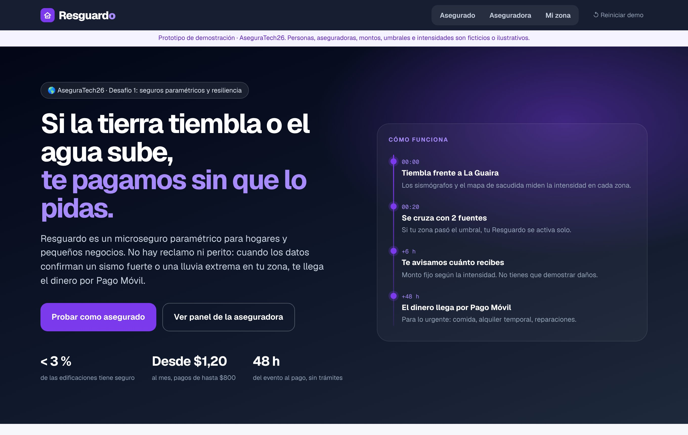
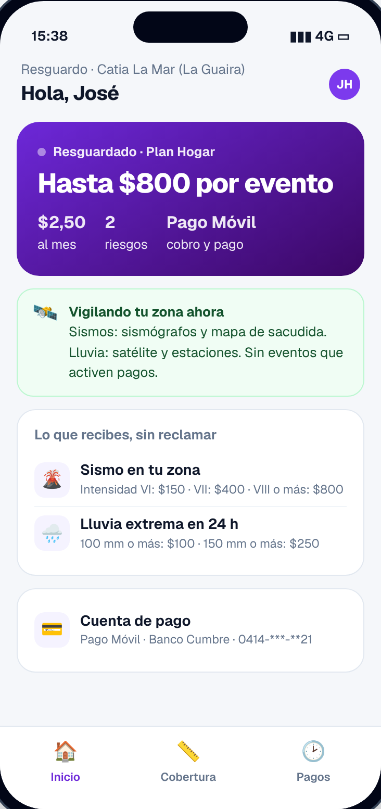
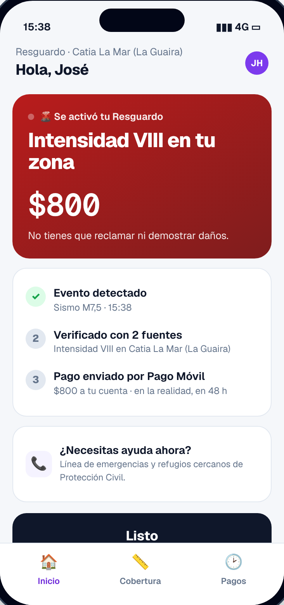
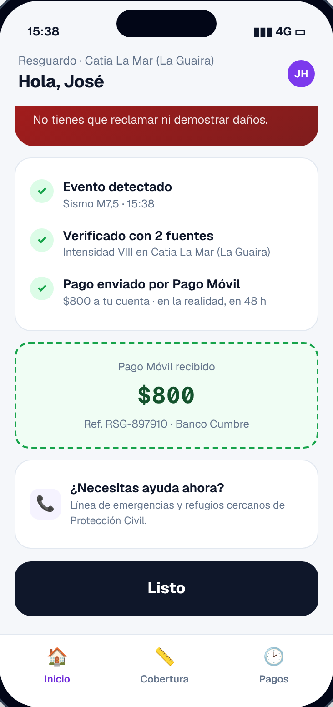
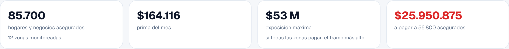
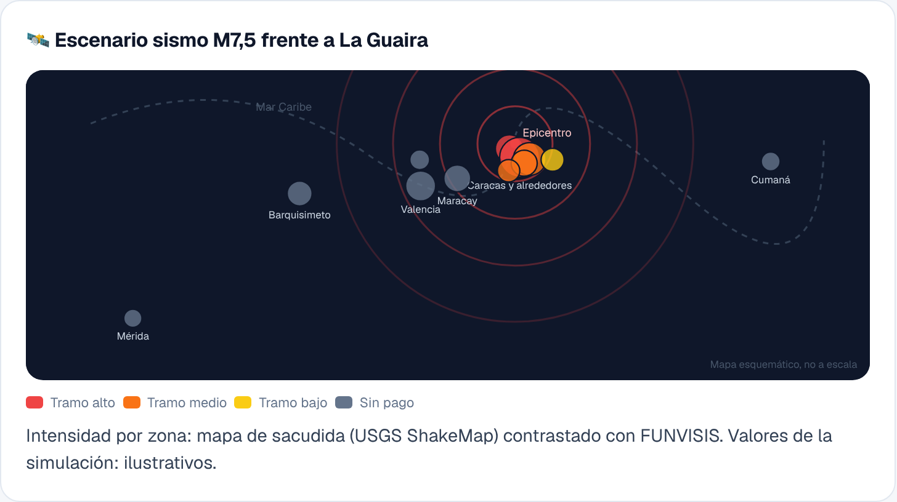
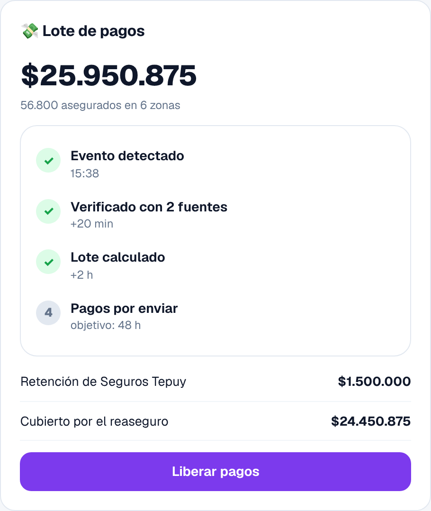
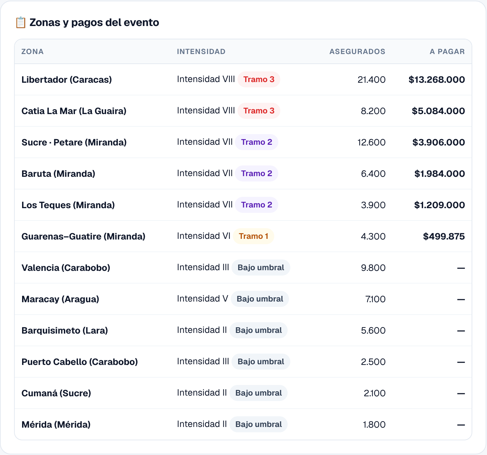
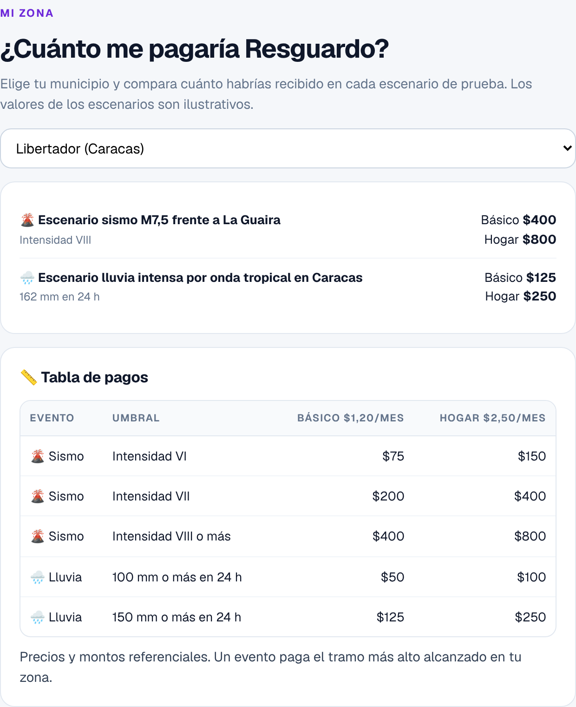
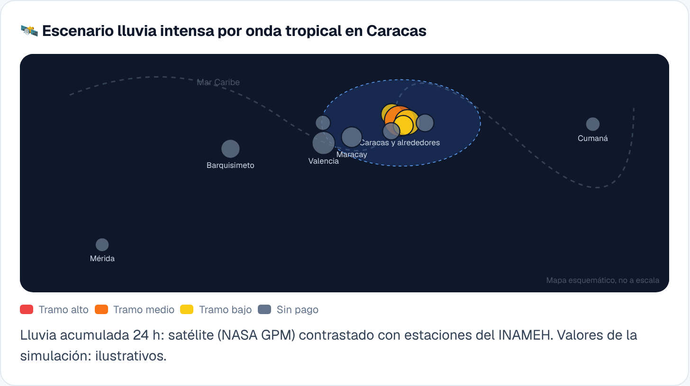

Un microseguro paramétrico de terremoto y lluvia extrema para hogares y pequeños negocios: cuando los datos confirman el evento en tu zona, el dinero llega por Pago Móvil, sin reclamo ni perito.

El doble terremoto del 24 de junio de 2026 y las lluvias de agosto mostraron que casi nadie en Venezuela tiene protección, y que el seguro tradicional llega tarde: peritos, inventarios y meses de trámites. Resguardo es un microseguro paramétrico: desde $1,20 al mes, paga un monto fijo de hasta $800 cuando un dato objetivo (intensidad sísmica o lluvia acumulada) pasa un umbral en la zona del asegurado. Sin reclamo, sin perito, por Pago Móvil.
Dinero inmediato para lo urgente, por lo que cuesta un pasaje al mes.
Un producto masivo sin costo de peritaje, con el riesgo catastrófico en el reaseguro.
Bancos, cooperativas y condominios protegen a su gente con un producto simple.
dejó el doble terremoto de magnitud 7,2 y 7,5 del 24 de junio, según el balance oficial a dos meses.
en daños estimados, según la adenda al Plan de Respuesta Humanitaria de la ONU.
de las edificaciones tiene una póliza, y apenas 6 % de los venezolanos tiene algún seguro.
En agosto, una onda tropical dejó desaparecidos y más de 150 viviendas afectadas en Caracas y dos estados.
En un seguro paramétrico, el pago no depende de un perito sino de un índice objetivo medido en la zona. Si el índice pasa el umbral, todos los asegurados de esa zona reciben el monto acordado.
Se contrata en un canal de confianza: app del banco, cooperativa, microfinanciera o junta de condominio, desde $1,20 al mes.
Vigila los datos: sismos con el mapa de sacudida del USGS contrastado con FUNVISIS; lluvia con el satélite NASA GPM contrastado con el INAMEH.
Se activa solo: si la zona pasa el umbral, se calcula el lote de pagos de todos los asegurados afectados.
Paga por Pago Móvil: monto fijo según el tramo alcanzado, con un objetivo de 48 horas.
| Evento | Umbral en la zona | Básico $1,20/mes | Hogar $2,50/mes |
|---|---|---|---|
| Sismo | Intensidad VI | $75 | $150 |
| Sismo | Intensidad VII | $200 | $400 |
| Sismo | Intensidad VIII o más | $400 | $800 |
| Lluvia | 100 mm o más en 24 h | $50 | $100 |
| Lluvia | 150 mm o más en 24 h | $125 | $250 |
José vive en Catia La Mar y tiene el plan Hogar. Cuando tiembla, su teléfono le avisa cuánto recibe y el dinero llega solo.

Resguardado. Plan, monto máximo por evento y la zona vigilada día y noche.

Se activó. Intensidad VIII en su zona: le corresponden $800, sin demostrar daños.

Pagado. Evento detectado, verificado con 2 fuentes y Pago Móvil recibido.
El monitor muestra qué zonas pasaron el umbral, cuántos asegurados hay en cada una y cuánto hay que pagar. La aseguradora libera el lote y el reaseguro cubre lo que excede su retención.



Cada zona tiene su dato, su tramo y su monto. Y cualquier persona puede consultar cuánto le pagaría Resguardo en su municipio antes de contratar.



Microseguros paramétricos de lluvia, inundación, sequía y terremoto en seis países de América Latina, con 690.000 asegurados y pagos automáticos sin reclamo.
La SBS reguló los seguros paramétricos, que activan pagos automáticos ante terremotos, tsunamis y lluvias.
| Fuente de ingresos | Descripción |
|---|---|
| Comisión tecnológica | Porcentaje de la prima por operar el monitoreo, el cálculo de lotes y los pagos. |
| Licencia del índice | Venta del índice y del motor de cálculo a aseguradoras y reaseguradores. |
| Programas colectivos | Pólizas para alcaldías, gremios o empresas que protegen a su comunidad o a sus trabajadores. |
| Fase | Qué |
|---|---|
| Hoy | Prototipo en línea: app del asegurado, monitor de la aseguradora y consulta por zona. |
| 0–3 meses | Acuerdos de datos con FUNVISIS e INAMEH; tarifa con una aseguradora y un reasegurador. |
| 3–6 meses | Piloto supervisado en La Guaira y Caracas con un canal aliado. |
| 6–12 meses | Más zonas y canales; plan para pequeños negocios (pérdida de ingresos). |
| 12+ meses | Programas con alcaldías y gremios; nuevos riesgos como la sequía para productores. |
El prototipo está en línea en resguardove.vercel.app. Un mismo evento simulado aparece en la app del asegurado y en el monitor de la aseguradora.
| Vista | Funcionalidades |
|---|---|
| Asegurado | Estado de la cobertura, simulación de sismo y lluvia, aviso automático con el monto, seguimiento del pago, tabla de pagos, cambio de plan e historial. |
| Aseguradora | Mapa esquemático de zonas, dato por zona, tramos, asegurados afectados, lote de pagos, retención y reaseguro. |
| Mi zona | Consulta por municipio de cuánto pagaría cada plan en cada escenario. |